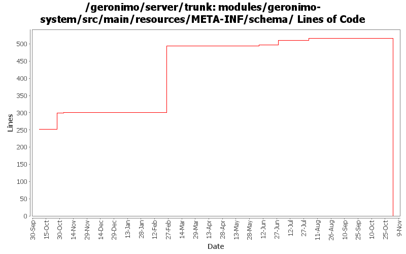

[root]/modules/geronimo-system/src/main/resources/META-INF/schema

| Author | Changes | Lines of Code | Lines per Change |
|---|---|---|---|
| Totals | 20 (100.0%) | 597 (100.0%) | 29.8 |
| ccardona | 2 (10.0%) | 494 (82.7%) | 247.0 |
| jdillon | 5 (25.0%) | 47 (7.9%) | 9.4 |
| jaydm | 4 (20.0%) | 38 (6.4%) | 9.5 |
| jlaskowski | 2 (10.0%) | 12 (2.0%) | 6.0 |
| dwoods | 2 (10.0%) | 6 (1.0%) | 3.0 |
| prasad | 5 (25.0%) | 0 (0.0%) | 0.0 |
GERONIMO-3565. Modules distributed amongst framework/modules and plugins
0 lines of code changed in 5 files:
GERONIMO-1265 - Preserve comments added by users in config.xml file
- Changes inspired by patch from Don Hill - Thanks Don!
6 lines of code changed in 2 files:
GERONIMO-3266 - Second revision of schema
- Corrected the attributes level comment
- Corrected the gbean level comment
19 lines of code changed in 1 file:
Geronimo-3266: First pass at new version of attribute schema (used by config.xml)
Adds support for one comment within each major element of the file:
- <attributes>
- <module>
- <gbean>
13 lines of code changed in 1 file:
GERONIMO-2757 Enhance plugin schema to allow for multiple versions of a plugin - Part 1. Also updated geronimo-plugin.xml files for the configs to point to the 2.0 repo.
6 lines of code changed in 2 files:
GERONIMO-2661 Make geronimo schema files more human readable
- Applied alldoc.patch (Thanks Rakesh..) and made additional modifications:
- Removed the extra Apache license annotation (I think the original Apache license header is enough)
- Arranged the schema formatting
- Changed some annotation/documentation text
494 lines of code changed in 2 files:
GERONIMO-2537 All Geronimo source files must be brought in line with the new ASF source header and copyright notice policy
Another shot at migrating modules to the new license header
12 lines of code changed in 2 files:
(GERONIMO-2525) Allow mixed content in attributes
47 lines of code changed in 3 files:
(GERONIMO-2463) Initial support for condition expressions to be used in the persistent configuration list
0 lines of code changed in 2 files: